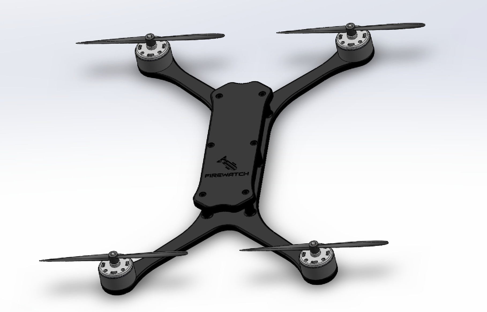

EXPONENTIALLY.
RESPONSE DOESN'T.
California wildfires don't wait. A fire that covers 10 acres at hour one can cover 10,000 acres by hour six. The response time gap between ignition and human ground crew arrival is where fires become disasters.
FireWatch attacks that gap directly. You don't need to put the fire out immediately — you need to slow it down. Even a 20–30% reduction in spread rate in the first few hours can mean the difference between a contained incident and a catastrophic loss.
Existing aerial response requires manned aircraft, weather windows, runway access, and significant lead time. FireWatch is autonomous, tower-based, and deployable in minutes — not hours.


STAND TODAY
CHANGE THIS